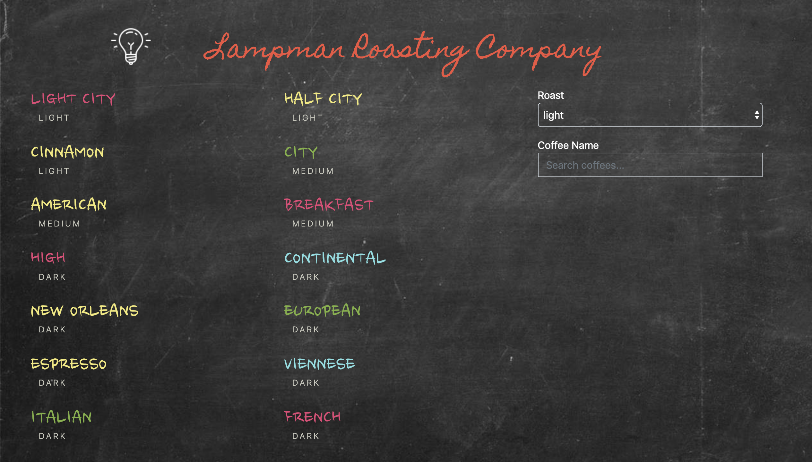
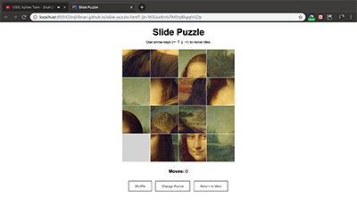

Hi, I'm Mindy.
I am currently studying to become a full-stack web developer at Codeup in San Antonio, TX. I am in the Zion cohort, which will graduate in June 2019.
I am currently studying to become a full-stack web developer at Codeup in San Antonio, TX. I am in the Zion cohort, which will graduate in June 2019.
Mobile-responsive Calculator
Coffee
Slide Puzzle
Just before starting Codeup, I completed my Bachelor of Fine Art degree at the Southwest School of Art.
I enjoy working in both front and back-end roles and picking up as many new skills as possible. I approach challenges as exciting encounters, not obstacles.
When not coding, I continue my art practice. Most of the time, I work in ceramics. I often post progress pictures on Instagram.
I also enjoy going to concerts and travelling when I have down-time. I live in San Antonio with my husband, David, and our cat, Mace.